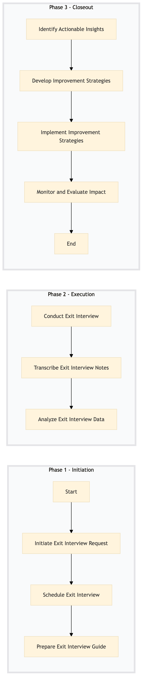

| Role | Steps |
|---|---|
| Human Resources Manager | 1.1 1.3 2.3 3.1 3.2 3.4 |
| Human Resources Coordinator | 1.2 2.1 2.2 |
| Human Resources Analyst | 3.3 |
| Step | Name | Role | System | Input | Output | KPI | Dec? | Exc? | Pain Point / Risk |
|---|---|---|---|---|---|---|---|---|---|
| 1.1 | Initiate Exit Interview Request | Human Resources Manager | Oracle OPERA Cloud PMS | Employee resignation notice | Exit interview request form | Less than 24 hours from resignation to initiation | N | Y | Delays in initiating the exit interview process can lead to missed opportunities for gathering valuable feedback. |
| 1.2 | Schedule Exit Interview | Human Resources Coordinator | Book4Time | Exit interview request form | Scheduled exit interview time slot | Less than 3 business days from initiation to scheduling | N | Y | Difficulty in securing a suitable time for the exit interview due to employee availability and conflicting schedules. |
| 1.3 | Prepare Exit Interview Guide | Human Resources Manager | Oracle OPERA Cloud PMS | Exit interview request form | Exit interview guide with standardized questions | Less than 1 hour from scheduling to preparation | N | Y | Ensuring consistency in the interview process across different HR managers. |
| 2.1 | Conduct Exit Interview | Human Resources Coordinator | Oracle OPERA Cloud PMS, Book4Time | Scheduled exit interview time slot and guide | Exit interview transcript or notes | Less than 30 minutes per interview | N | Y | Handling sensitive topics and ensuring a comfortable environment for the departing employee. |
| 2.2 | Transcribe Exit Interview Notes | Human Resources Coordinator | Oracle OPERA Cloud PMS | Exit interview transcript or notes | Digital transcription of the interview | Less than 2 hours per interview | N | Y | Accuracy and completeness of transcriptions to ensure data integrity. |
| 2.3 | Analyze Exit Interview Data | Human Resources Analyst | Microsoft Power BI, Oracle OPERA Cloud PMS | Digital transcription of the interview | Exit interview analysis report | Less than 1 business day from transcribing to analysis | N | Y | Interpreting qualitative data and identifying key themes and patterns. |
| 3.1 | Identify Actionable Insights | Human Resources Manager | Microsoft Power BI, Oracle OPERA Cloud PMS | Exit interview analysis report | Actionable insights and recommendations | Less than 1 business day from analysis to identification | N | Y | Prioritizing insights that have the most significant impact on reducing turnover. |
| 3.2 | Develop Improvement Strategies | Human Resources Manager, Training Coordinator | Oracle OPERA Cloud PMS, Workday HCM | Actionable insights and recommendations | Improvement strategies document | Less than 1 business day from identification to development | N | Y | Aligning strategies with the hotel's overall goals and budget constraints. |
| 3.3 | Implement Improvement Strategies | Human Resources Manager, Training Coordinator, Department Heads | Oracle OPERA Cloud PMS, Workday HCM | Improvement strategies document | Implementation plan and timeline | Less than 1 week from development to implementation | N | Y | Coordinating cross-functional teams and ensuring buy-in for the proposed changes. |
| 3.4 | Monitor and Evaluate Impact | Human Resources Manager, Training Coordinator | Oracle OPERA Cloud PMS, Microsoft Power BI | Implementation plan and timeline | Impact evaluation report | Less than 1 month from implementation to evaluation | N | Y | Measuring the effectiveness of implemented strategies and making necessary adjustments. |
HR-EW-07 is a structured process document designed to conduct exit interviews and analyze turnover at Marriott full-service hotels. This process aims to gather valuable insights into employee satisfaction, identify areas for improvement, and reduce turnover rates.